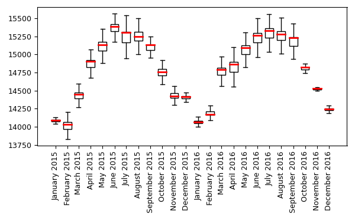

DESCRIPTION
t.rast.boxplot draws boxplots of the raster in a space-time
raster data set (strds). The module can be used to display changes over
time, and how this varies within a area. It will plot all rasters in
a strds. To display a subset of a strds, the user first needs to create
a new strds with the required subset of raster layers. It will
furthermore, plot the boxplots using the temporal granularity of
the strds.
The whiskers of the boxplots extend to the most extreme data point,
which is no more than range ✕ the interquartile range
(iqr) from the box. By default, a range of 1.5 is used, but the
user can change this. Note that range values need to be larger than 0.
There are a few plot format/layout options, including the option to
rotate the plot and the x-axis labels, print the boxplot(s) with
notches, and to include the outliers (by default, they are not
included). You can also set the limits of the y-axis (or the x-axis if
the -h flag is set). This makes it easier to compare the boxplots of
two time-series of, e.g., two different areas.
Option to format the boxplots include setting the width color of
the boxplots. An alternative to the latter is to set the
colors of the boxplots according to the corresponding categories of
the zonal raster. In addition, the user can set the color
and width of the median line(s) and set the width of the boxplots.
The default format of the date-time labels on the x-axis (or y-axis in
case the boxplots are plotted horizontally) depend on the temporal
granularity of the data. This can be changed by the user. For a list of
options, see the Python strftime
cheatsheet.
By default, the resulting plot is displayed on screen. However, the
user can also save the plot to file using the output option.
The format is determined by the extension given by the user. So, if
output = outputfile.png, the plot will be saved as a *png* file. The
user can set the output size (in inches) and resolution (dpi) of the
output image.
NOTE
If you work with a large number of raster layers, of if the raster
layers are very large, try to avoid setting the 'range' value very low,
as that may result in a massive number of outliers, slowing down the
computations and rendering of the plot.
The t.rast.boxplot module operates on the raster array defined by the
current region settings, not the original extent and resolution of the
input map. See g.region
to understand the impact of the region settings on the calculations.
EXAMPLE
The first two examples use the MODIS Land Surface Temperature mapset.
First download the North Caroline sample data set from this
link. Unzip the sample GRASS GIS dataset to a convenient location
on your computer. Next, download the MODIS mapset (link)
and unzip this in the NC location of the NC database. Now, open the
mapset in GRASS GIS.
Example 1
Plot the time series, using the default settings, except that we set
the dimension of the plot to 12 inch (ca. 30 cm) wide and 8 inch (ca.
20 cm) height, and a dpi of 200
g.region raster=landclass96
t.rast.boxplot input=LST_Day_monthly@modis_lst \
plot_dimensions=12,8 dpi=200
Example 2
We use the same example as above, but this time, we change the color of
the boxplots and median lines to respectively green
(bx_color=green) and white (median_color=white), use the
default plot dimensions, set the font size to 8, and include the
outliers (-o flag). Note that by plotting the outliers will
increase the time required to create the plot considerably.
For the outliers (fliers) we use orange squares (flier_marker=s
& flier_color=orange). We furthermore plot the boxplots
horizontally (-h flag) and add grid lines (-g flag. Note
that for horizontal plots, the labels are plotted horizontally (equal
to rotate_labels=0) by default.
t.rast.boxplot -o -h -g input=LST_Day_monthly@modis_lst \
bx_color=green median_color=white median_lw=0.8 bx_lw=0.8 \
flier_color=orange flier_size=1 flier_marker=s font_size=8
See here
for the different formats in which colors can be specified.
Example 3
In the following example, the date labels are changed, showing the
abbreviated name of the month, followed by the year (date_format="%B
%Y"). The boxplot colors are set to white, and for the median line
we set the color to orange and the line width to 2. Lastly, the labels
are rotated 90℃ (the default for vertical plots is
rotate_labels=45).
t.rast.boxplot input=LST_Day_monthly@modis_lst rotate_labels=90 \
date_format="%B %Y" bx_color=white median_lw=2 median_color=red \
font_size=9

Example 4
If we want to plot 3-monthly patterns instead, we first need to create
a new strds. In the example below, the function
t.rast.aggregate is used to aggregate the LST_Day_monthly to a
3 month granularity.
t.rast.aggregate input=LST_Day_monthly@modis_lst output=LST_Day_3monthly \
basename=LST_3monthly granularity="3 months" method=average
Now, we can plot the 3-monthly temporal pattern using the newly created
strds as input.
t.rast.boxplot input=LST_Day_3monthly@modis_lst
As you can see below, the plot plots the boxplots using the 3-month
granularity of the input strds.
Acknowledgements
This work was carried in the framework of the Save the tiger, save
the grassland, save the water project by the Innovative Bio-Monitoring research group of the HAS
University of Applied Sciences.
SEE ALSO
r.boxplot.html,
r.series.boxplot.html,
d.vect.colbp,
r.scatterplot,
r.stats.zonal,
t.rast.aggregate
AUTHOR
Paulo van Breugel
Applied Geo-information Sciences
HAS University of Applied
Sciences